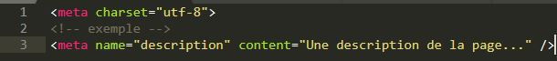

|
Les balises <meta> servent à placer des
métadonnées (metadata) dans une page HTML.On placera
ces informations dans l’élément, stronge<meta>
et elles ne seront pas affichées sur la page.
Ces informations sont destinées à tous les outils suscep-
tibles de les exploiter. Et notamment;
-
aux navigateurs web
-
aux moteurs de recherche;
-
plus largement, à tous les outils d’indexation,
c’est-à-dire tous les outils qui analysent vos pages
pour y identifier diverses informations.
|

|
Le résultat de cette balise ne peut pas être visualisé.
Elle est consomée par le navigateur web et il n y a pas de
rendu visible
|